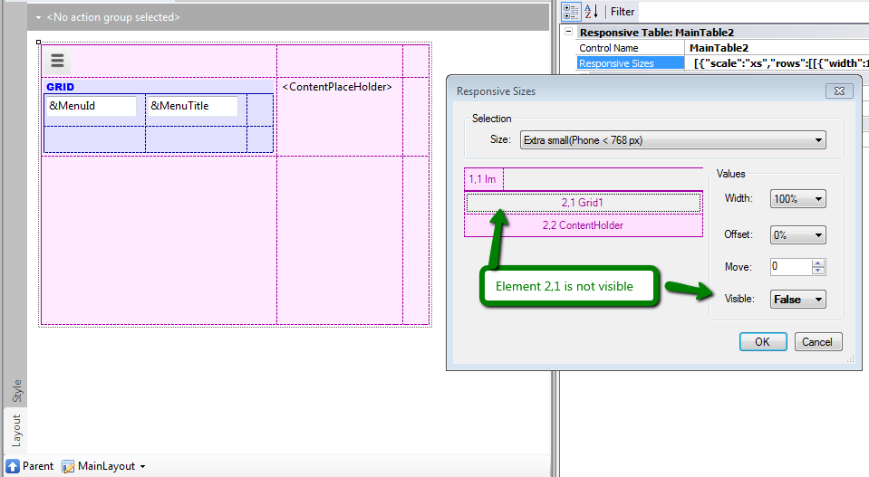
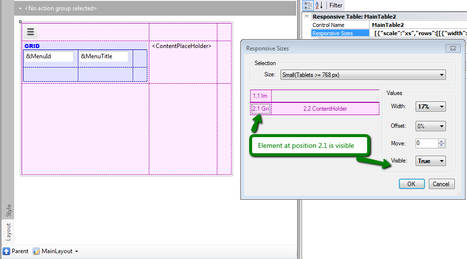

In a Responsive Web Application the columns of a Responsive Table are not fixed and they may vary depending on the size of the screen. Sometimes on phone screens only one column has to be shown, whereas on tablets and desktops more information can be presented to the user. This can be configured using the Web Abstract Editor which is opened through the Responsive Sizes property (X Evolution 3) of the Responsive Table. ExampleConsider the following example, where only one column will be displayed on phone screens, and two columns will be displayed to the user on tablets and desktop screens.
The left menu is only shown when the screen size is not extra small.How is it designed?You can set it by pressing the "Responsive Sizes" button in the Responsive Table properties. The screen size is selected in the "Size" combo box. When selecting the cell that belongs to the column which is going to be hidden, you have to configure the visible property. In this case, the configuration is available only for Extra Small Sizes, as shown in the figure below:  In the example, the menu is displayed using a grid, and it is configured to be hidden for extra small devices. For small screens and wider screens, the visible property has to be set to TRUE; otherwise, its value will be inherited from the smaller size.  See AlsoHow to design a responsive web application: Hiding an element of the form
|